سؤال إضافي: ماذا تناولتِ على الإفطار اليوم؟ هل كان مفيدًا لجسمك؟
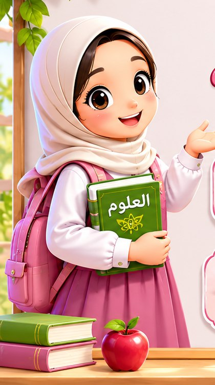
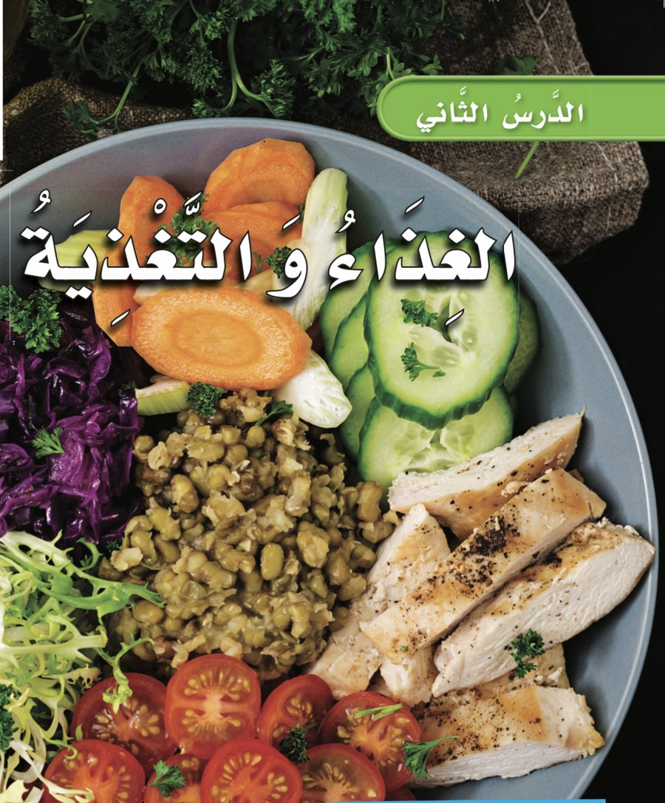
أنظرُ وأتساءلُ
يحتاج الإنسان إلى تناول مجموعة من الأطعمة التي تشكّل الغذاء الصحي الأكثر توازنًا. هل يمكن أن تُعدّد الأطعمة التي تشكّل غذاءً متوازنًا لصحة الجسم؟
ماذا أرى في الطبق؟
خضراوات: خيار وطماطم وجزرملفوف وخسدجاجبقوليات
السؤال الأساسي
كيف يكون غذائي صحيًا؟
اكتبي هنا تساؤلات الطالبات…
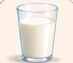
حليب كامل الدسم · ١٠٠ مل
كربوهيدرات٤٫٨ جم
دهون٣٫٣ جم
بروتين٣٫٣ جم
أملاح (كالسيوم وغيره)٠٫٧ جم
فيتاميناتأ، د
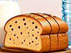
خبز البُر · ١٠٠ جم
كربوهيدرات٤١ جم
دهون٣٫٤ جم
بروتين١٣ جم
أملاح (حديد وغيره)٢ جم
فيتاميناتمجموعة ب
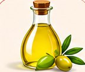
زيت الزيتون · ١٠٠ مل
كربوهيدرات٠ جم
دهون١٠٠ جم
بروتين٠ جم
أملاح٠ جم
فيتاميناتهـ
كيف تساعدنا ملصقات المنتجات الغذائية على اختيار الغذاء المتوازن؟
أفحص الملصقات الثلاثة، وأسجّل كمية المواد الغذائية بالجرام:
المنتج
الكربوهيدرات
الدهون
البروتين
الأملاح
الفيتامينات
الحليب
الخبز
الزيت
أناقش زميلاتي فيما قرأته في الملصقات:
• أي المنتجات فيه أكبر كمية من الكربوهيدرات؟ • أي المنتجات كله تقريبًا دهون؟ • هل يوجد منتج يحتوي على جميع المواد الغذائية بكميات مناسبة؟
الخبز أكثرها كربوهيدرات، والزيت كله تقريبًا دهون، ولا يوجد منتج واحد يحتوي على جميع المواد الغذائية بكميات مناسبة.
أستنتج: أي الأطعمة تشكّل غذاءً متوازنًا لصحتي؟ ولماذا؟
لا يكفي طعام واحد. الغذاء المتوازن يجمع أطعمة متنوعة، مثل الخبز (طاقة) مع الحليب (بروتين وأملاح) وقليل من الزيت، مع الخضراوات والفواكه والماء. والملصق يساعدني على معرفة ما في الطعام قبل اختياره.
أستكشف أكثر: أختار ثلاث مواد غذائية في منزلي، وأتفحّص ملصقاتها.
الغذاء المتوازن
لماذا نأكل؟توجد المواد الغذائية في الطعام الذي نتناوله، وهي ضرورية لنمو الجسم، وإمداده بالطاقة، والمحافظة عليه سليمًا.
متى يكون غذائي متوازنًا؟عندما يحتوي على جميع أنواع الغذاء الذي يحتاج إليه الجسم، وبكميات مناسبة.
يزوّد الغذاء الجسم بالطاقة اللازمة للعمليات والأنشطة المختلفة.
تحقق سريعأكمل العبارة: اسحبي الكلمة المناسبة إلى الفراغ
يُسمّى الغذاء الذي يحتوي على جميع أنواع المواد الغذائية بكميات مناسبة:
الغذاء السريع
الغذاء المتوازن
الهرم الغذائي
الكربوهيدرات المجموعة ١ من ٦
فائدتهاهي المصدر الرئيس للطاقة في الجسم غالبًا.
مصادرها
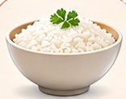
الأرزالخبزرقائق الذرةالحبوبالتمرالبطاطس
من حياتي: الطالبة التي تتناول إفطارها تجد طاقة للتركيز واللعب في المدرسة.
أطعمة غنية بالكربوهيدرات
تحقق سريعأختار الإجابة الصحيحة
المصدر الرئيس للطاقة في الجسم غالبًا هو:
البروتينات المجموعة ٢ من ٦
فائدتهاتساعد الجسم على النمو وتعويض الخلايا التالفة في الجسم.
مصادرها
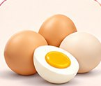
البيض
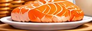
الأسماك
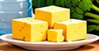
الجبنالحليبالبقولياتاللحومالدواجن
من حياتي: عندما يُجرح إصبعي، تساعد البروتينات على بناء خلايا جديدة مكان التالفة.
أطعمة غنية بالبروتين
تحقق سريعأصحّح المفهوم
«تساعد الكربوهيدرات الجسم على النمو وتعويض الخلايا التالفة.» العبارة:
التصحيح: تساعد البروتينات الجسم على النمو وتعويض الخلايا التالفة.
الدهون المجموعة ٣ من ٦
فائدتهاتساعد الخلايا على العمل بشكل سليم، وتزوّد الجسم بالطاقة، وتمنحه الدفء، وتساعد على الاستفادة من الغذاء وتخزين الفيتامينات.
انتبهي: الإكثار من الوجبات الغنية بالدهون يسبب الإصابة بالسمنة وبأمراض القلب.
مصادرها
الزيوت النباتية
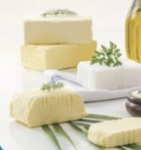
الزبدةاللحومزيوت الأسماك
أطعمة غنية بالدهون
تحقق سريعأصحّح المفهوم
«كلما أكثرنا من تناول الدهون كانت أجسامنا أكثر صحة.» العبارة:
التصحيح: يحتاج الجسم إلى كمية مناسبة من الدهون، والإكثار منها يسبب السمنة وأمراض القلب.
أصنّف: المواد الغذائية التالية إلى مجموعتين
بيض
سمك
أرز
خبز
مجموعة الكربوهيدرات
مجموعة البروتينات
التفكير الناقد
ماذا يحدث للجسم إذا اعتمد الإنسان في غذائه على صنف واحد فقط من المواد الغذائية؟
١أفكّر
٢أناقش زميلتي
٣أشارك
لن يحصل الجسم على جميع المواد الغذائية التي يحتاج إليها؛ فقد يشعر بالتعب، ولا ينمو بشكل سليم، ويصبح أكثر عرضة للأمراض.
الفيتامينات المجموعة ٤ من ٦
فائدتهاتساعد على المحافظة على صحة الجسم، وبناء خلايا جديدة، والوقاية من الأمراض، مثل: فيتامين ج وفيتامين د.
مصادرها
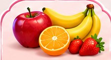
الفواكه
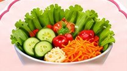
الخضراواتالحليبالحبوب
من حياتي: البرتقال غني بفيتامين ج، وأشعة الشمس الصباحية تساعد الجسم على تكوين فيتامين د.
الفواكه والخضراوات غنية بالفيتامينات
تحقق سريعأكمل العبارة
من أمثلة الفيتامينات: فيتامين
وفيتامين
ج
الكالسيوم
د
الأملاح المعدنية المجموعة ٥ من ٦
فائدتهاتساعد على تكوين العظام وخلايا الدم الجديدة، ومنها: الكالسيوم والحديد.
مصادرها
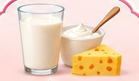
منتجات الألبان
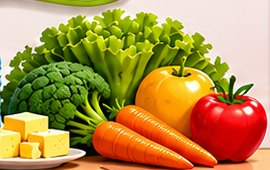
الخضراواتاللحومالحبوب
من حياتي: كوب الحليب يوميًا يقوّي عظامي وأسناني لأنه غني بالكالسيوم.
أطعمة غنية بالأملاح المعدنية
تحقق سريعأختار الإجابة الصحيحة
من الأملاح المعدنية التي تساعد على تكوين العظام:
أصنّف: الأرز، الزبدة، الزيت، البطاطس
الأرز
الزبدة
الزيت
البطاطس
الكربوهيدرات
الدهون
التفكير الناقد:لماذا يُعد تناول الفيتامينات مهمًا لصحة الإنسان؟
لأنها تحافظ على صحة الجسم، وتبني خلايا جديدة، وتقيه من الأمراض.
اقرأ الصورة: صنّفي مكونات الوجبة
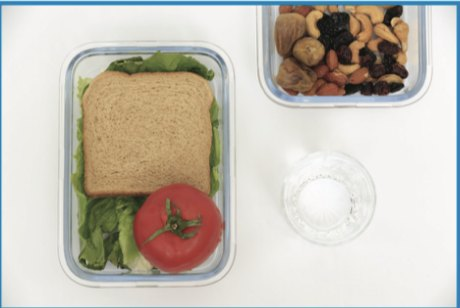
الخبز ←كربوهيدرات
الطماطم والخس ←فيتامينات وأملاح
المكسرات ←دهون وبروتينات
كأس الماء ←الماء
إرشاد: توجد المواد الغذائية في الطعام الذي نتناوله. اضغطي كل بطاقة لإظهار المجموعة.
الماء المجموعة ٦ من ٦
أهميتهيشكّل الماء ثلثي جسم الإنسان تقريبًا، فهو يساعد الجسم على الهضم، والتخلص من الفضلات، والمحافظة على درجة حرارة الجسم ثابتة.
ماءماءمواد أخرى
ثلثا الجسم ماء تقريبًا
مصادره
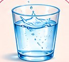
الماء النقيالحليب
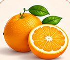
العصيراتالخضراوات والفواكه
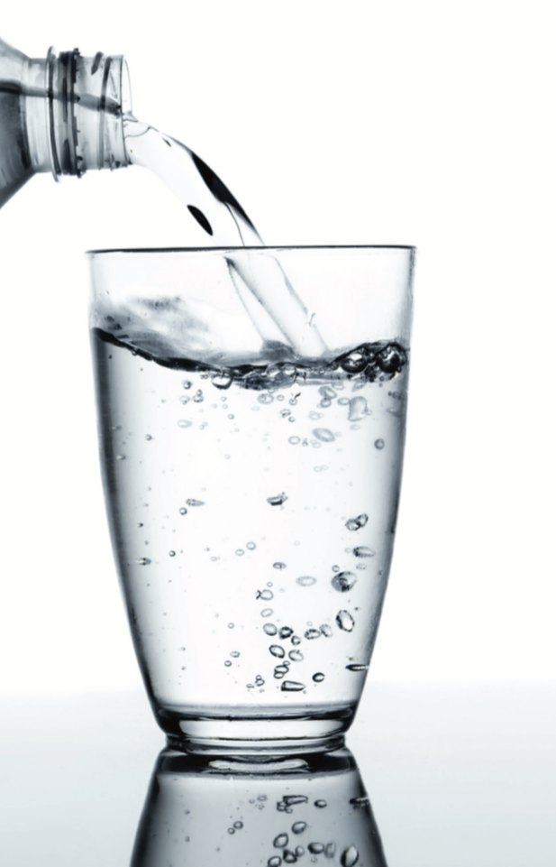
الكتاب ص ١٧٧
تحقق سريعأصحّح المفهوم
«يشكّل الماء نصف جسم الإنسان تقريبًا، ولا يحتاج إليه الجسم إلا عند العطش الشديد.» العبارة:
التصحيح: يشكّل الماء ثلثي جسم الإنسان تقريبًا، ونحتاج إليه يوميًا للهضم والتخلص من الفضلات وتنظيم الحرارة.
الكربوهيدرات
البروتينات
الدهون
الفيتامينات
الأملاح المعدنية
الماء
الأرز
البيض
الزيت
البرتقال
الحليب
الماء
الخبز
السمك
الزبدة
الجبن
الخضراوات
الفواكه
الهدف
أصنّف الأطعمة إلى مجموعات المواد الغذائية الست.
الخطوات
أتأمل صور الأطعمة.
أحدد المجموعة الغنية بها.
أسحب الصورة إلى الصندوق المناسب.
المستوى
الغذاء المتوازن
غذائي وصحتي
يحتاج جسم الإنسان إلى غذاء متوازن ليحصل على الطاقة وينمو ويحافظ على صحته.وتساعد البروتينات على النمو وتعويض الخلايا التالفة،بينما تمد الكربوهيدرات الجسم بالطاقة.وتساعد الفيتامينات والأملاح المعدنية على المحافظة على صحة الجسم،ويحتاج الإنسان أيضًا إلى الماء للقيام بوظائفه الحيوية.
١ أقرأ٢ أفهم٣ أجيب
١لماذا يحتاج الإنسان إلى الغذاء المتوازن؟
ليحصل على الطاقة، وينمو، ويحافظ على صحته.
٢ما المادة الغذائية التي تساعد على النمو وتعويض الخلايا التالفة؟
البروتينات.
٣استنتجي: ماذا يحدث إذا لم يحصل الجسم على غذاء متنوع؟
لن يحصل على جميع المواد الغذائية؛ فيقلّ نشاطه، ولا ينمو بشكل سليم، ويصبح أكثر عرضة للأمراض.
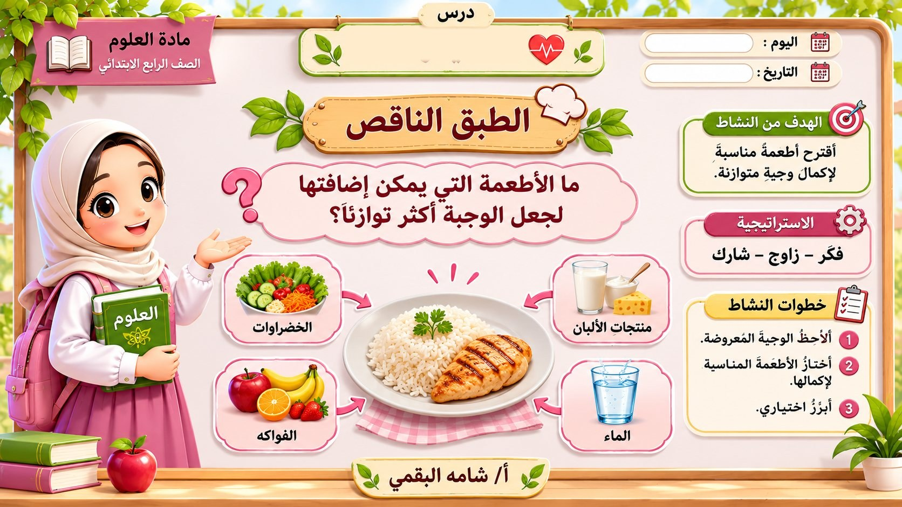
الغذاء والتغذية
لا توجد جميع المواد الغذائية في نوع واحد من الأطعمة؛ لذا يجب أن يشتمل طعامنا على جميع المواد الغذائية بكميات محددة. والهرم الغذائي نموذج يوضّح أنواع الأطعمة التي يحتاجها الإنسان يوميًا.
الهرم الغذائي: دليل غذائي على شكل مثلث يحدد حاجات الأفراد الغذائية التي يجب تناولها.
أصنّف: المواد الغذائية إلى مجموعتين حسب فوائدها
البروتينات
الدهون
الكربوهيدرات
الأملاح المعدنية
إمداد الجسم بالطاقة
النمو وبناء العظام
التفكير الناقد
لماذا يُعد الهرم الغذائي مهمًا في تناول الغذاء المتوازن؟
لأنه يوضح أنواع الأطعمة التي نحتاجها يوميًا والكمية المناسبة من كل مجموعة؛ فنُكثر من القاعدة ونقلل من القمة.
١المفردات
............ يشكّل ثلثي جسم الإنسان تقريبًا، ويساعد على التخلص من الفضلات، ويحافظ على درجة حرارة الجسم.
لماذا يجب شرب الحليب بشكل عام، وفي السنوات الأولى من عمر الطفل بشكل خاص؟
لأنه غني بالبروتينات للنمو، وبالكالسيوم لبناء العظام والأسنان، والطفل في مرحلة نمو سريع.
٤أختار الإجابة الصحيحة
تساعد الجسم على النمو وتعويض الخلايا التالفة فيه:
١اختيار من متعدد
الخبز مصدر غني بـ:
٢تصنيف مصوّر: أختار مجموعة كل طعام
٣أصحّح المفهوم
«الفيتامينات هي المصدر الرئيس للطاقة في الجسم.»
التصحيح: الكربوهيدرات هي المصدر الرئيس للطاقة، أما الفيتامينات فتحافظ على صحة الجسم وتقيه من الأمراض.
٤تفكير ناقد
تتناول ريم البطاطس المقلية والحلوى كل يوم، ولا تأكل الخضراوات. بماذا تنصحينها؟ ولماذا؟
أنصحها بالتقليل من المقليات والحلوى لأن الإكثار من الدهون يسبب السمنة وأمراض القلب، وأن تضيف الخضراوات والفواكه لتحصل على الفيتامينات والأملاح، وتكوّن وجبة متوازنة.
الدرجة: ٠ / ٥
أصنّف: البيض من مصادر أي مادة غذائية؟
أختار: أيهما مصدر للكربوهيدرات: الأرز أم الزيت؟
أفسّر: لماذا يحتاج جسمي إلى الماء؟
لأنه يشكّل ثلثي الجسم، ويساعد على الهضم والتخلص من الفضلات والمحافظة على درجة الحرارة.
السؤال الأساسي: كيف يكون غذائي صحيًا؟ عندما يكون متوازنًا ومتنوعًا ويحتوي على المجموعات الست بكميات مناسبة.